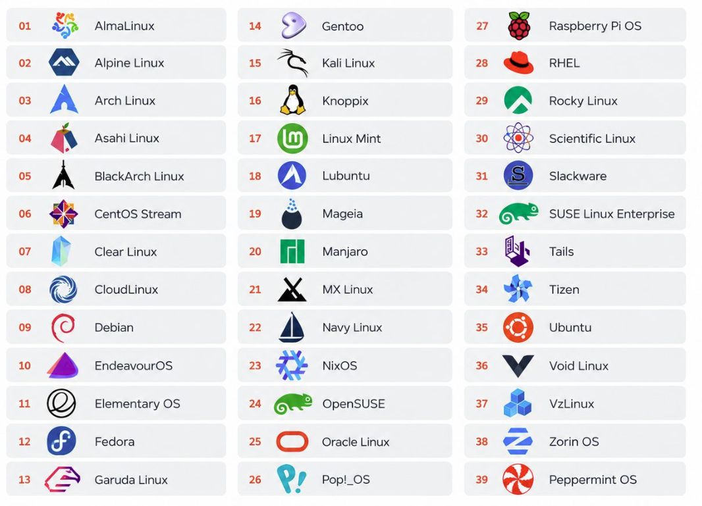
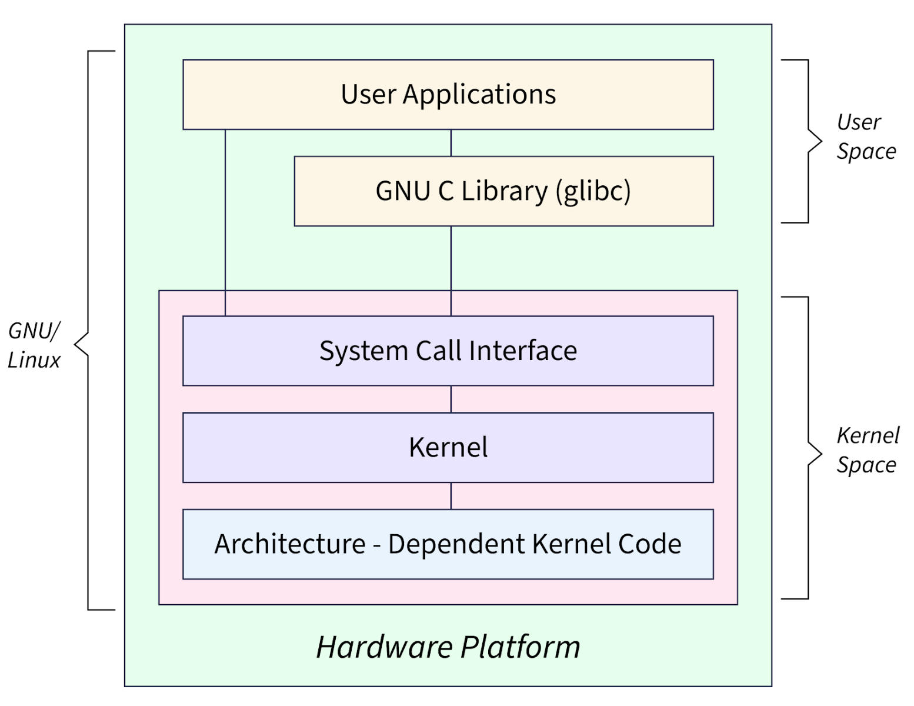

WHAT IS
Linux?
Overview & History
Linux is the term that refers to the set of open-source operating systems running on Linux kernel. The kernel itself was developed in 1991 by Finnish software developer Linus Torvalds and was designed as free Unix-like operating system for personal computers. GNU Project launched in 1983 by Richard Stallman offered the vital parts to build an operating system, such as compilers, libraries, shells and other components.
The idea of Linux development was to design a portable, modular and free from modifications operating system contrary to proprietary Unix systems. Currently, Linux powers web servers, cloud services, embedded devices, and much more.
Advantages and trade-offs:
-
Advantages: Open source, highly customizable, efficient, and has a large community.
-
Trade-offs: Many enterpise apps and games have limited support.


Architecture
Linux uses a monolithic kernel in which core services like process management, virtual memory, network, filesystems run in kernel space. On the other hand, the Linux kernel is modular, so many functions can be dynamically loaded and unloaded without compromising speed of performance. The kernel works with preemptive scheduling which assigns CPU time to processes and threads. Virtual memory maps the process's address space into physical memory and can use paging/swapping when there is not enough memory.
For Linux devices, most drivers
function according to the Loadable Kernel Module (LKM) framework.
Drivers are compiled into .ko files and are loaded by
modprobe. Drivers register themselves in different
kernel subsystems. For example, USB, PCI, networking, sound, or DRM.
Dynamic loading helps to not require the recompilation of the entire
kernel every time new hardware is added. However, it is important to
note that a buggy driver still runs with kernel privileges and can
crash the whole system.
Linux apps run outside the kernel, or in user space. User space uses process isolation to to mitigate the consequences of program failure. The user space uses native system calls and POSIX interfaces to talk to the kernel instead. Users interact with the computer using shells like Bash, Zsh, or Fish. That is not to say there is no GUI, though this is distribution dependent. Graphical user interfaces are not ubiquitous, they depend on the distribution; most distributions include the graphical desktop environment (GNOME, KDE Plasma, and others) and window managers.
Linux provides a Virtual Filesystem (VFS), which offers a common interface for file systems to application programs, regardless of the underlying file system being used by a storage device (ext4, XFS, Btrfs, etc.). This structure improves the portability of Linux across a number of hardware and storage configurations; although, it is true that having several configuration choices can increase the burden of management.